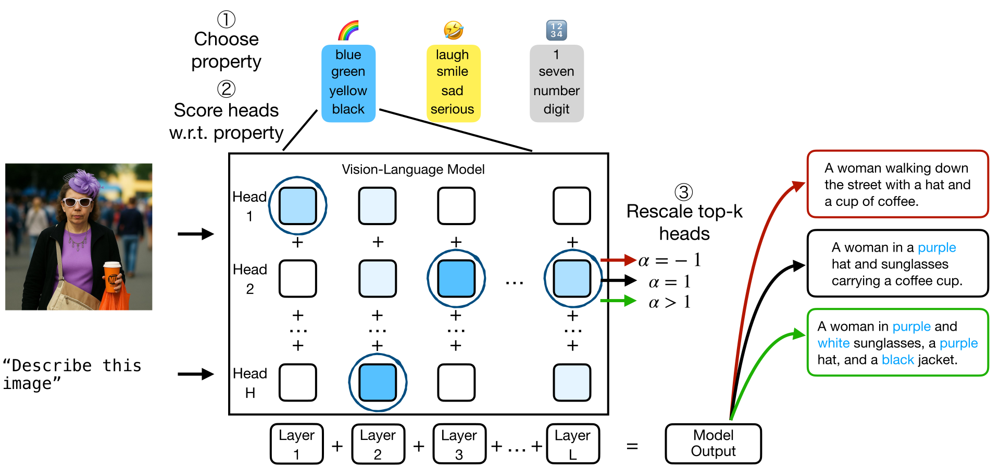
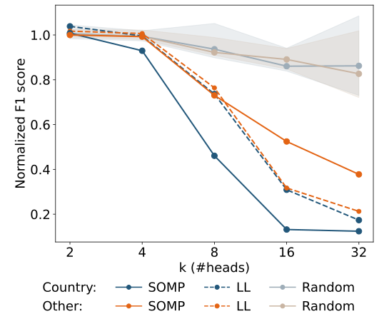
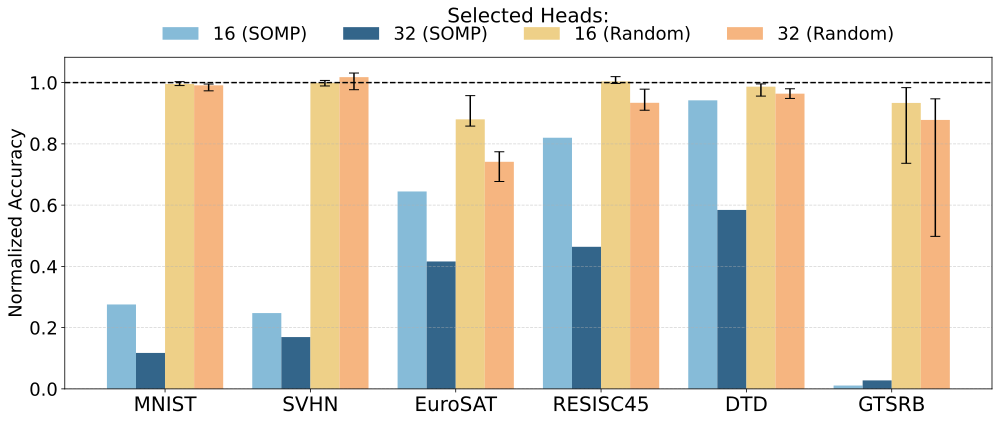
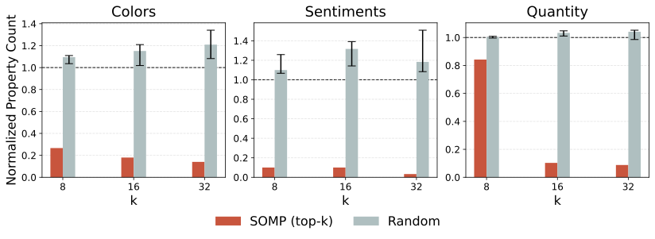
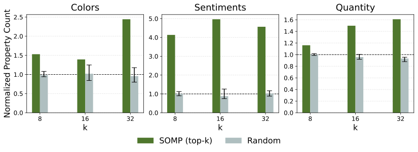
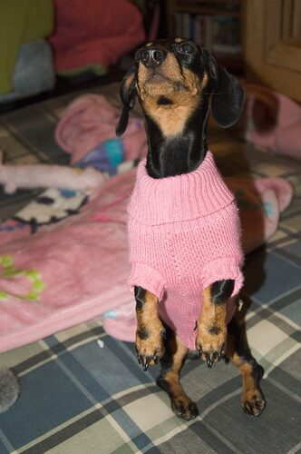

Head Pursuit: Probing Attention Specialization in Multimodal Transformers
A single matching-pursuit step over the unembedding finds the ~1% of attention heads that carry a concept — enough to suppress or amplify it
Individual attention heads in generative language and vision-language models specialize in narrow semantic or visual attributes. Recasting the Logit Lens as a step of sparse signal recovery, Head Pursuit uses Simultaneous Orthogonal Matching Pursuit over the model’s unembedding matrix to rank heads by their relevance to a target concept. Editing as few as 1% of the heads reliably suppresses or enhances the targeted concept across question answering, toxicity mitigation, image classification, and image captioning.
Overview
Large language and vision-language models perform remarkably well, yet the role of their individual components remains only partly understood. Head Pursuit asks a focused question: do individual attention heads specialize in generating tokens from narrow semantic areas — colors, numbers, country names — and can that specialization be used to steer the model’s output?
The central move is to reinterpret an established interpretability tool — the Logit Lens (nostalgebraist 2020), which projects an intermediate residual-stream vector onto the unembedding directions — through the lens of sparse signal recovery. A single Logit Lens read-out is equivalent to one step of Matching Pursuit (Mallat and Zhang 1993) on one example. Head Pursuit generalizes this to many samples and many directions at once, yielding a principled way to rank heads by relevance to a concept and then intervene on a tiny fraction of them.

Pursuing specialized heads
Following the residual-stream decomposition of Elhage et al. (2021), the output written by each head h in layer l over a dataset is a matrix \mathbf{H}_{h,l}\in\mathbb{R}^{n\times d}, where n is the number of samples and d the model’s internal dimension. The goal is to approximate this output with a sparse combination of interpretable directions drawn from a fixed dictionary \mathbf{D}\in\mathbb{R}^{v\times d} — the model’s unembedding matrix, whose rows decode into natural-language tokens.
The decomposition is computed with Simultaneous Orthogonal Matching Pursuit (SOMP) (Tropp et al. 2006), a multi-sample extension of Orthogonal Matching Pursuit (Pati et al. 1993). SOMP seeks a column-sparse coefficient matrix \mathbf{W}^\ast such that
\mathbf{H} \approx \mathbf{W}^\ast \mathbf{D}.
At each iteration it greedily selects the dictionary atom most correlated with the current residuals across all samples,
p^{t} = \arg\max_{j}\,\bigl\lVert \mathbf{D}[j]\,{\mathbf{R}^{t}}^{\top} \bigr\rVert_{1},
adds it to the support, and refits by least squares restricted to that support. Restricting the dictionary to the rows associated with a chosen concept and measuring the fraction of head variance explained by SOMP gives a score that ranks heads by their relevance to that concept.
Applied to Mistral-7B (Jiang et al. 2023) prompted with TriviaQA (Joshi et al. 2017) questions, SOMP surfaces clearly interpretable heads — the top tokens it recovers for four of them are below.
| L18.H27 (Politics) | L24.H20 (Nationality) | L25.H14 (Months) | L30.H28 (Numbers) |
|---|---|---|---|
| COVID | British | December | 9 |
| Soviet | American | July | 1 |
| Obama | European | April | 3 |
| Biden | German | October | 7 |
| Clinton | English | February | five |
The paper notes that applying the raw Logit Lens in the same setting yields noisier, more redundant token lists, motivating the multi-sample formulation.
Controlling language generation
To validate the selection, the authors invert the sign of a selected head’s contribution to the residual stream during the forward pass and measure the effect on generation. Every experiment includes a random control: a disjoint, size- and layer-matched set of heads, reported over 10 independently sampled sets.
Question answering
On TriviaQA, the target attribute is country names — which account for over 6% of the answers in the test split. Inverting the SOMP-selected heads disproportionately degrades F1 on the country-answer subset, while performance on the rest of the data declines more gradually; the paper reports a noticeable drop once 8 heads (0.8% of the total) or more are inverted. Random control heads have no significant effect, and heads picked by a Logit-Lens baseline are relevant to QA but not specific to the targeted concept — they degrade performance equally inside and outside the country subset.

Toxicity mitigation
In a less controlled setting — reducing toxic generations given only a short, incomplete keyword list — toxic words are extracted from Mistral’s responses with Llama-3.3 and used to identify toxic heads. Two benchmarks are used: RealToxicityPrompts (RTP) (Gehman et al. 2020) and Thoroughly Engineered Toxicity (TET) (Luong et al. 2024). Toxicity is scored semantically by a RoBERTa-based classifier. The table reports the normalized count of toxic generations after intervention (lower is better; random baselines as medians).
| Dataset | SOMP (8) | LL (8) | Rand. (8) | SOMP (16) | LL (16) | Rand. (16) | SOMP (32) | LL (32) | Rand. (32) |
|---|---|---|---|---|---|---|---|---|---|
| RTP | 0.83 | 0.91 | 1.02 | 0.67 | 0.79 | 1.00 | 0.66 | 0.71 | 1.13 |
| TET | 0.83 | 0.81 | 0.97 | 0.68 | 0.73 | 0.95 | 0.49 | 0.68 | 0.95 |
Inverting SOMP-selected heads consistently reduces classifier-judged toxicity, the Logit-Lens baseline has a generally weaker effect, and random heads tend to maintain or increase toxicity. The paper further reports (in its appendix) that the same intervention lowers the frequency of held-out toxic keywords that were not used for head selection — evidence that the method extrapolates a broad semantic area from a narrow list.
Targeted control in vision-language models
The same analysis transfers to the LLM backbone of generative VLMs, where SOMP is applied to the head representations of image-patch tokens (averaged over tokens), following work that extends the Logit Lens to visual tokens of LLaVA (Neo et al. 2025).
Image classification
LLaVA-NeXT-7B (Liu et al. 2024) is benchmarked on MNIST, SVHN, GTSRB, EuroSAT, RESISC45, and DTD, scoring outputs by exact match with the class label. Inverting the top 32 heads selected by SOMP is enough to significantly disrupt classification across all datasets, while inverting 32 random heads at the same layers has substantially lower to no effect. At k=16 the picture is similar, with the exception of DTD (textures), whose performance is only weakly affected — hinting at higher head redundancy on that task.

Selected heads also overlap in semantically meaningful ways: digit datasets (MNIST, SVHN) share heads, as do the remote-sensing datasets (EuroSAT, RESISC45), and intervening with heads chosen on one dataset degrades a semantically related one — pointing to heads that recognize numerical symbols across domains.
Image captioning
On Flickr30k (Young et al. 2014), the goal is to suppress or enhance the presence of words from a target semantic area — colors, sentiments, quantity — in generated captions, by rescaling selected heads with a coefficient \alpha (\alpha=-1 to invert, \alpha>1 to amplify). Caption quality is tracked with CIDEr (Vedantam et al. 2015).

For the inhibitory direction, as few as 16 SOMP-selected heads almost completely remove attribute-related keywords from the captions while keeping overall quality close to the original — the paper reports CIDEr always exceeding 80% of the no-intervention value.

For the enhancing direction (with \alpha=5, chosen as a trade-off between quality and effect), amplifying the selected heads increases the presence of the target concept by more than 60% in all three categories with 32 heads, again with only marginal impact on caption quality. The effect is visible directly in the generated text:

| Image / direction | LLaVA-NeXT caption |
|---|---|
| Colors — original | A small dachshund wearing a pink sweater. |
| Colors — inhibition (k=16,\ \alpha=-1) | A small dachshund wearing a sweater. |
| Colors — enhancement (k=16,\ \alpha=5) | A black and brown dog wearing a pink sweater. |
| Sentiments — original | A young woman with long brown hair and a smile. |
| Sentiments — inhibition (k=16,\ \alpha=-1) | Girl with long brown hair blowing in the wind. |
| Sentiments — enhancement (k=16,\ \alpha=5) | A happy girl with long hair and a big smile. |
Takeaways
Across unimodal and multimodal generative transformers, attention heads exhibit a consistent, concept-aligned structure that a multi-sample reading of the Logit Lens — formalized as sparse recovery over the unembedding matrix — can expose. Because that structure is approximately linear, intervening on roughly 1% of the heads is enough to suppress or enhance a targeted attribute, in either direction, without any additional training. The authors are explicit about the limits: SOMP assumes linearity, the result depends on the quality of the semantic dictionary, and the intervention is a deliberately blunt global rescaling rather than fine-grained steering.
The figures and example captions on this page are reproduced from the original paper, which is released under CC BY 4.0. A copyable BibTeX entry for this page is generated below.
Citation
@inproceedings{basile2025,
author = {Basile, Lorenzo and Maiorca, Valentino and Doimo, Diego and
Locatello, Francesco and Cazzaniga, Alberto},
title = {Head {Pursuit:} {Probing} {Attention} {Specialization} in
{Multimodal} {Transformers}},
booktitle = {Advances in Neural Information Processing Systems
(NeurIPS)},
date = {2025-10-24},
url = {https://arxiv.org/abs/2510.21518}
}